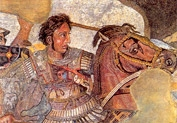

Famous Greek People
This section provides information about Famous Greek people. There couldn't be a website referring to the history of Greece and the Greek islands without a reference to the most famous Greek people and personalities that made this small country famous all over the world with their achievements and thinking. Source: www.greeka.com
This section is dedicated to providing the biographies of the most famous Greeks ever. From the ancient till the modern times, there are many Greek people that have left their mark in various domains: philosophy, arts, music, war strategy, literature, science and politics. You can also read about famous quotes Source: www.greeka.com
-

Alexander the Great Alexander the Great is the most famous Greek personality ever. His short life was full of adventures. Born in Pella, Macedonia, in 356 BC, he became king at the age of 20. After he united the Greek city-states, he launched an expedition to the East and managed to conquer the Persian Empire and extend the borders of his kingdom till India. He died a month before he turned 33, beloved as a god while he was alive and celebrated as a legend after his death.
-

Homer the Epic Poet Homer, the famous poet of the Greek antiquity, is known all over the world for his two epic poems, the Iliad and the Odyssey. Historians believe that Homer was blind, as shown by his name, which in Greek means "he who can't see". Many cities claim to be the birthplace of Homer, while it is believed that he died in Ios, the homeland of his mother. He lived in the 8th century BC and didn't actually write his poems, but narrated them and scholars wrote them down. Source: www.greeka.com
Philosopher
-
Plato the Metaphysic Philosopher Socrates is considered today as the founder of Western philosophy. His notions of ethics, virtue and truth passed through centuries. Although we have no manuscipts of Socrates himself, his life and ideology are vividly presented in the works of Plato and Xenophon, his direct students, while some accounts are also found in Aristotle and Aristophanes. Socrates believed that the real truth is hidden in every man and all he has to do is to discover it. Because of his philosophical teachings, he was accused of corrupting the youth and was sentenced to death by the Athenian politicians. He died in prison drinking poison.
-
Aristotle the Philosopher of Reason Aristotle, student of Socrates and Plato, is the third most famous philosopher of the Greek antiquity. He studied in the Academy of Plato, the first university of the world. When Plato died, he went to teach the son of king Phillip of Macedon, Alexander the Great. On his return to Athens, he founded Lyceum, a school of philosophy and other sciences. Although only one third of his work survives today, it can be seen that he studied almost all sciences known in the ancient times. His philosophical notions survived for centuries and influenced a lot the Western culture.
-

Pericles the Inspired Statesman Pericles (495-429 BC) was the man who led Athens to its glory. An inspired politician, a brave general and a persuasive orator, Pericles led his hometown to the top scale. It was under his guidance that Athens became the greatest naval power all over Greece, that the Acropolis was built and that culture was developed. Born in 495 BC, he took part in many battles and remained leader of the town for 40 years.
-
Leonidas the legendary King of Sparta Leonidas, the legendary king of Sparta, is world famous for his act of self-sacrifice, when he and his 300 Spartan soldiers died in the battle of Thermopylae to protect the rest of Greece from the Persian invasion, in 480 BC. Today, the statue of Leonidas lies at the site of Thermopylae to commemorate this special event. The tomb of the king is found in Sparta, his homeland, where he was honored as a god till the Roman times.